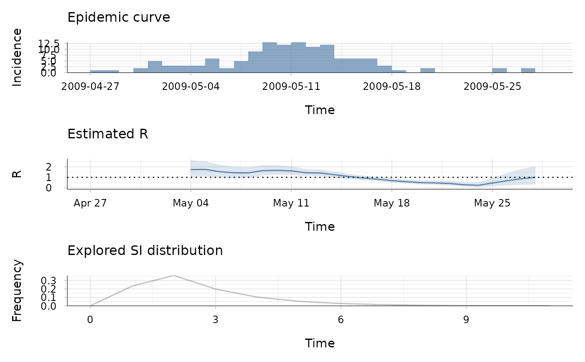
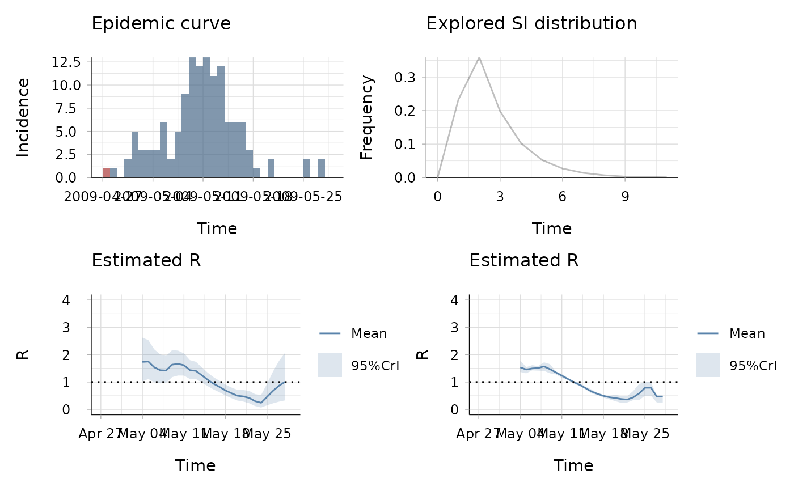

The plot method of estimate_R() objects can be used to visualise three
types of information. The first one shows the epidemic curve. The second one
shows the posterior mean and 95% credible interval of the reproduction
number. The estimate for a time window is plotted at the end of the time
window. The third plot shows the discrete distribution(s) of the serial
interval.
Usage
# S3 method for class 'estimate_R'
plot(
x,
what = c("all", "incid", "R", "SI"),
plot_theme = "v2",
add_imported_cases = FALSE,
options_I = list(col = grDevices::palette(), transp = 0.7, xlim = NULL, ylim = NULL,
interval = 1L, xlab = "Time", ylab = "Incidence"),
options_R = list(col = grDevices::palette(), transp = 0.2, xlim = NULL, ylim = NULL,
xlab = "Time", ylab = "R"),
options_SI = list(prob_min = 0.001, col = "black", transp = 0.25, xlim = NULL, ylim =
NULL, xlab = "Time", ylab = "Frequency"),
legend = TRUE,
...
)
# S3 method for class 'wallinga_teunis'
plot(
x,
what = c("all", "incid", "R", "SI"),
plot_theme = "v2",
add_imported_cases = FALSE,
options_I = list(col = grDevices::palette(), transp = 0.7, xlim = NULL, ylim = NULL,
interval = 1L, xlab = "Time", ylab = "Incidence"),
options_R = list(col = grDevices::palette(), transp = 0.2, xlim = NULL, ylim = NULL,
xlab = "Time", ylab = "R"),
options_SI = list(prob_min = 0.001, col = "black", transp = 0.25, xlim = NULL, ylim =
NULL, xlab = "Time", ylab = "Frequency"),
legend = TRUE,
...
)Arguments
- x
The output of function
estimate_R()or functionwallinga_teunis(). To plot simultaneous outputs on the same plot useestimate_R_plots().- what
A string specifying what to plot, namely the incidence time series (
what = 'incid'), the estimated reproduction number (what = 'R'), the serial interval distribution (what = 'SI'), or all three (what = 'all').- plot_theme
A string specifying whether to use the original plot theme (
plot_theme = "original") or an alternative plot theme (plot_theme = "v2"). The plot_theme is "v2" by default.- add_imported_cases
A boolean to specify whether, on the incidence time series plot, to add the incidence of imported cases.
- options_I
For
what = "incid"or"all". A list of graphical options:col: A color or vector of colors used for plotting incid. By default uses the default R colors.transp: A numeric value between 0 and 1 used to monitor transparency of the bars plotted. Defaults to 0.7.xlim: A parameter similar to that inpar, to monitor the limits of the horizontal axis.ylim: A parameter similar to that inpar, to monitor the limits of the vertical axis.interval: An integer or character indicating the (fixed) size of the time interval used for plotting the incidence; defaults to 1 day.xlab,ylab: Labels for the axes of the incidence plot.
- options_R
For
what = "R"orwhat = "all". A list of graphical options:col: A color or vector of colors used for plotting R. By default uses the default R colors.transp: A numeric value between 0 and 1 used to monitor transparency of the 95% CrI. Defaults to 0.2.xlim: A parameter similar to that inpar, to monitor the limits of the horizontal axis.ylim: A parameter similar to that inpar, to monitor the limits of the vertical axis.xlab,ylab: Labels for the axes of the R plot.
- options_SI
For
what = "SI"orwhat = "all". A list of graphical options:prob_min: A numeric value between 0 and 1. The SI distributions explored are only shown from time 0 up to the time t so that each distribution explored has probability <prob_minto be on any time step after t. Defaults to 0.001.col: A color or vector of colors used for plotting the SI. Defaults to black.transp: A numeric value between 0 and 1 used to monitor transparency of the lines. Defaults to 0.25.xlim: A parameter similar to that inpar, to monitor the limits of the horizontal axis.ylim: A parameter similar to that inpar, to monitor the limits of the vertical axis.xlab,ylab: Labels for the axes of the serial interval distribution plot.
- legend
A boolean (
TRUEby default) governing the presence / absence of legends on the plots- ...
further arguments passed to other methods (currently unused).
Value
A plot (if what = "incid", "R", or "SI") or a
grid::grob() object (if what = "all").
Examples
## load data on pandemic flu in a school in 2009
data("Flu2009")
## estimate the instantaneous reproduction number
## (method "non_parametric_si")
R_i <- estimate_R(Flu2009$incidence,
method = "non_parametric_si",
config = list(
t_start = seq(2, 26),
t_end = seq(8, 32),
si_distr = Flu2009$si_distr
)
)
## visualise results
plot(R_i, legend = FALSE)

## estimate the instantaneous reproduction number
## (method "non_parametric_si")
R_c <- wallinga_teunis(
Flu2009$incidence,
method = "non_parametric_si",
config = list(
t_start = seq(2, 26),
t_end = seq(8, 32),
si_distr = Flu2009$si_distr,
n_sim = 10
)
)
## produce plot of the incidence
## (with, on top of total incidence, the incidence of imported cases),
## estimated instantaneous and case reproduction numbers
## and serial interval distribution used
p_I <- plot(R_i, "incid", add_imported_cases=TRUE) # plots the incidence
#> The number of colors (1) did not match the number of groups (2).
#> Using `col_pal` instead.
p_SI <- plot(R_i, "SI") # plots the serial interval distribution
p_Ri <- plot(R_i, "R",
options_R = list(ylim = c(0, 4)))
# plots the estimated instantaneous reproduction number
p_Rc <- plot(R_c, "R",
options_R = list(ylim = c(0, 4)))
# plots the estimated case reproduction number
library(patchwork) # For figure placement
(p_I + p_SI) / (p_Ri + p_Rc)
